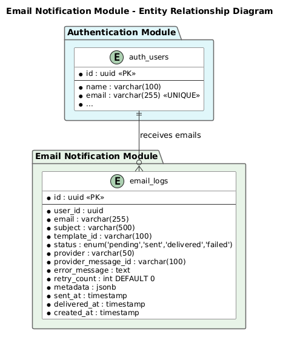

Database Design
Email Notification Module
EMAIL
1. Introduction
1.1 Purpose
This document describes the database design for the Email Notification module, including schema, indexes, and migration scripts.
1.2 Database Overview
| Property | Value |
|---|
| Database Name | email_db |
| Module | EMAIL - Email Notification |
| Tables | email_logs |
| Engine | PostgreSQL |
2. Entity Relationship Diagram

Figure 1: Email Notification ERD
3. Table Definitions
3.1 email_logs
Stores email delivery logs including recipient, subject, status, and provider details.
| Column | Type | Constraints | Description |
|---|
| id | uuid | PK, NOT NULL, DEFAULT gen_random_uuid() | Unique identifier |
| user_id | uuid | NOT NULL | Associated user ID |
| email | varchar(255) | NOT NULL | Recipient email address |
| subject | varchar(500) | NOT NULL | Email subject line |
| template_id | varchar(100) | NOT NULL | Email template identifier |
| status | enum('pending','sent','delivered','failed') | NOT NULL, DEFAULT 'pending' | Delivery status |
| provider | varchar(50) | NOT NULL | Email provider name (sendgrid, smtp) |
| provider_message_id | varchar(100) | NULL | Provider's message ID for tracking |
| error_message | text | NULL | Error details if delivery failed |
| retry_count | integer | NOT NULL, DEFAULT 0 | Number of retry attempts |
| metadata | jsonb | NULL | Additional context data (OTP, template vars) |
| sent_at | timestamp | NULL | When email was sent to provider |
| delivered_at | timestamp | NULL | When email was delivered to recipient |
| created_at | timestamp | NOT NULL, DEFAULT NOW() | Record creation time |
SQL CREATE TABLE
CREATE TABLE email_logs (
id UUID PRIMARY KEY DEFAULT gen_random_uuid(),
user_id UUID NOT NULL,
email VARCHAR(255) NOT NULL,
subject VARCHAR(500) NOT NULL,
template_id VARCHAR(100) NOT NULL,
status VARCHAR(20) NOT NULL DEFAULT 'pending'
CHECK (status IN ('pending', 'sent', 'delivered', 'failed')),
provider VARCHAR(50) NOT NULL,
provider_message_id VARCHAR(100),
error_message TEXT,
retry_count INTEGER NOT NULL DEFAULT 0,
metadata JSONB,
sent_at TIMESTAMP,
delivered_at TIMESTAMP,
created_at TIMESTAMP NOT NULL DEFAULT NOW()
);
4. Indexes
| Index Name | Table | Columns | Purpose |
|---|
| idx_email_logs_user_id | email_logs | user_id | Query emails by user |
| idx_email_logs_status | email_logs | status | Filter by delivery status |
| idx_email_logs_created_at | email_logs | created_at | Time-based queries and cleanup |
| idx_email_logs_provider_message_id | email_logs | provider_message_id | Look up by provider message ID |
SQL CREATE INDEXES
CREATE INDEX idx_email_logs_user_id ON email_logs (user_id);
CREATE INDEX idx_email_logs_status ON email_logs (status);
CREATE INDEX idx_email_logs_created_at ON email_logs (created_at);
CREATE INDEX idx_email_logs_provider_message_id ON email_logs (provider_message_id);
5. Migration Scripts
5.1 Initial Migration
-- Migration: Create email_logs table
-- Date: 2026-07-24
-- Module: EMAIL
BEGIN;
CREATE TABLE email_logs (
id UUID PRIMARY KEY DEFAULT gen_random_uuid(),
user_id UUID NOT NULL,
email VARCHAR(255) NOT NULL,
subject VARCHAR(500) NOT NULL,
template_id VARCHAR(100) NOT NULL,
status VARCHAR(20) NOT NULL DEFAULT 'pending'
CHECK (status IN ('pending', 'sent', 'delivered', 'failed')),
provider VARCHAR(50) NOT NULL,
provider_message_id VARCHAR(100),
error_message TEXT,
retry_count INTEGER NOT NULL DEFAULT 0,
metadata JSONB,
sent_at TIMESTAMP,
delivered_at TIMESTAMP,
created_at TIMESTAMP NOT NULL DEFAULT NOW()
);
CREATE INDEX idx_email_logs_user_id ON email_logs (user_id);
CREATE INDEX idx_email_logs_status ON email_logs (status);
CREATE INDEX idx_email_logs_created_at ON email_logs (created_at);
CREATE INDEX idx_email_logs_provider_message_id ON email_logs (provider_message_id);
COMMIT;
5.2 Rollback Script
-- Rollback: Drop email_logs table and indexes
-- Date: 2026-07-24
-- Module: EMAIL
BEGIN;
DROP INDEX IF EXISTS idx_email_logs_provider_message_id;
DROP INDEX IF EXISTS idx_email_logs_created_at;
DROP INDEX IF EXISTS idx_email_logs_status;
DROP INDEX IF EXISTS idx_email_logs_user_id;
DROP TABLE IF EXISTS email_logs CASCADE;
COMMIT;
6. Data Dictionary
| Table | Module | Description | Resolves | Est. Rows (Y1) |
|---|
| email_logs | EMAIL | Email delivery logs and audit trail | FR-001, FR-003, FR-004 | 500,000 |